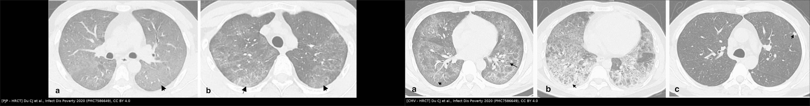
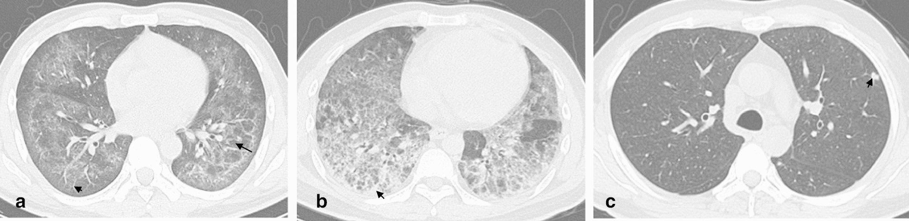
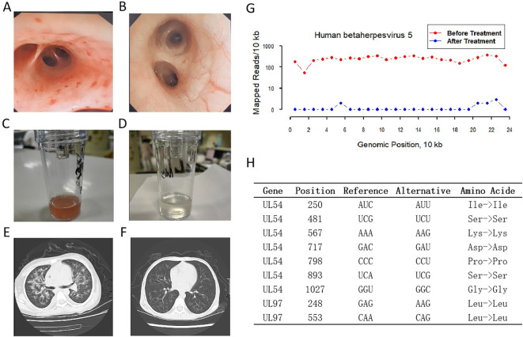
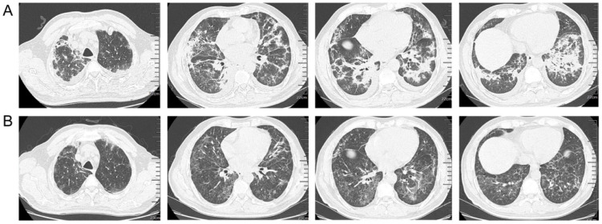

1789 — Viêm phổi do CMV ở người ghép tạng / Cytomegalovirus pneumonia in transplant recipients
Tags: pattern:kinh-mo pattern:not pattern:dong-dac pattern:vien-kinh-mo pattern:day-ke vung:phoi protocol:CT-nguc-lat-mong protocol:BAL protocol:PCR-CMV score:CMV-DNA
Mức chắc chắn (certainty): tổng hợp y văn (literature synthesis) — số liệu từ đoàn hệ HRCT, nghiên cứu dịch tễ và case report; chưa gắn một ca nguyên văn duy nhất.
1. Tổng quan — CMV gây viêm phổi bằng 2 con đường
- Cytomegalovirus (CMV, human betaherpesvirus 5) thuộc họ Herpesviridae; sau nhiễm tiên phát, virus nằm tiềm tàng trong tế bào gốc tủy và tế bào myeloid suốt đời. Khi ức chế miễn dịch (ghép tạng, ghép tế bào gốc, thuốc ức chế miễn dịch), virus tái hoạt và lây lan qua tế bào nội mô và bạch cầu.
- Tổn thương phổi trực tiếp: CMV nhiễm tế bào nội mô mao mạch phổi và đại thực bào phế nang → viêm phổi kẽ với thâm nhiễm tế bào đơn nhân, phù kẽ, xuất tiết trong phế nang; tế bào nhiễm to ra (cytomegaly 25–35 µm) với thể vùi trong nhân kiểu "mắt cú" (owl's eye inclusion) và thể vùi bào tương. Nhiễm nội mô gây viêm mao mạch, xuất huyết và tổn thương lan theo khoảng cửa.
- TẠI SAO hình ảnh là kính mờ + nốt + đông đặc: kính mờ (ground-glass opacity — GGO) xuất hiện khi phù/thâm nhiễm lấp một phần khoang phế nang nhưng chưa xóa mạch máu; nốt nhỏ trung tâm tiểu thùy phản ánh ổ viêm/hoại tử quanh tiểu phế quản; quầng kính mờ quanh nốt (halo sign) là xuất huyết quanh ổ hoại tử; đông đặc là khi phế nang bị lấp hoàn toàn. Vì vậy CMV cho nhiều kiểu hình cùng lúc hơn PJP.
- TẠI SAO hay gặp ở người ghép: nguy cơ cao nhất là D+/R− (người nhận âm tính, người cho dương tính) vì virus đến từ mảnh ghép; các yếu tố làm nặng thêm: ATG, corticoid liều cao, bệnh mảnh ghép chống chủ (GVHD), giảm CD4. Sau khi ngừng dự phòng, CMV có thể xuất hiện muộn — đã ghi nhận ca khởi phát 1 năm sau ghép tế bào gốc tự thân với CD4 chỉ 172/µL [PMC13198634].
- Số liệu nền (allo-HSCT, gộp 56 nghiên cứu/13.882 bệnh nhân): nhiễm CMV 49,99%; bệnh CMV 13,30%; nhiễm kháng trị 32,03%; tử vong do mọi nguyên nhân 29,25%; tử vong liên quan CMV 3,46% [PMC12003426]. Riêng viêm phổi CMV có tử vong 30–50% [PMC12552285]. Đây là lý do không được chờ hình ảnh "điển hình" mới điều trị.
2. Mẫu hình + chẩn đoán phân biệt theo kiểu hình và vật chủ
- Kiểu 1 — kính mờ hai bên ± lưới (phổ biến nhất): GGO gặp 100% ca CMV-P; lưới 52,94%; phân bố thùy/không theo thùy, thường lan tỏa hoặc ưu thế đáy [PMC7586649].
- Kiểu 2 — nốt nhỏ ± halo: nốt gặp 47,06% ca CMV-P (so với 8,97% ở PJP, p < 0,001); nốt nhỏ 32,35%, nốt hiển vi 14,71%, không có nốt lớn; phân bố trung tâm tiểu thùy 23,53%, ngẫu nhiên 23,53%. Halo sign 32,35% (PJP 11,54%, p = 0,01) [PMC7586649].
- Kiểu 3 — đông đặc: 61,77% ca CMV-P (PJP 35,90%, p = 0,01); thường đông đặc dải hoặc đông đặc quanh nốt [PMC7586649].
- Kiểu 4 — tưới máu mosaic: 29,41%; phản ánh tổn thương tiểu đường thở/mạch nhỏ, không đặc hiệu.
- Ngoài phổi trên CT: tràn dịch màng phổi 23,53% (PJP 10,26%), hạch trung thất 14,71%, dày thành phế quản 47,06% [PMC7586649].
- Gamut theo vật chủ: người ghép tạng → CMV, PJP, Aspergillus, Pneumocystis, thải ghép cấp, thuốc ức chế miễn dịch (mTOR/ICI), xuất huyết phế nang lan tỏa (DAH), phù phổi; người ghép tế bào gốc → CMV, PJP, virus cộng đồng (RSV/influenza), nấm, PTLD.
- Gợi nhớ "CMV = GGO + nốt nhỏ + đông đặc; PJP = GGO + nang khí, ít nốt": trong nghiên cứu so sánh trực tiếp, kết hợp đông đặc + nốt cho AUC 0,769 để phân biệt CMV-P với PJP — đủ để gợi ý, không đủ để chẩn đoán [PMC7586649].

Trái: PJP — kính mờ lan tỏa, lưới nhẹ, không nốt rõ. Phải: CMV — kính mờ + lưới + đông đặc + nốt nhỏ có halo (panel c). Du CJ et al., Infect Dis Poverty 2020;9:117 (PMC7586649), Fig. 1–2, CC BY 4.0; ảnh ghép letterbox giữ tỷ lệ.3. Bảng so sánh phân biệt (ma trận đối chiếu)
| Thực thể (entity) | Hình ảnh điển hình trên HRCT | Chốt vào (rule-in) | Chốt loại (rule-out) | Gợi ý xác nhận |
|---|---|---|---|---|
| Viêm phổi CMV | GGO 100% + lưới 53% + nốt nhỏ 32% + đông đặc 62% + halo 32%; không nốt lớn | Nốt nhỏ trung tâm tiểu thùy/ngẫu nhiên + đông đặc + halo ở người ghép | GGO đơn thuần, không nốt, không đông đặc → vẫn không loại trừ CMV | CMV DNA trong BAL + giảm ức chế miễn dịch; mô học/IHC |
| PJP | GGO lan tỏa đối xứng, lưới, nang khí/pneumatocele, không nốt | GGO + nang khí + LDH tăng + BDG dương | Nốt nhỏ/đông đặc rõ → nghĩ CMV hoặc đồng nhiễm | BAL nhuộm Grocott/PCR PJP |
| Cúm/RSV | GGO + tree-in-bud, dày thành phế quản, tổn thương vá; có thể đông đặc thùy | Tree-in-bud + bối cảnh dịch tễ | Không có tree-in-bud, có nốt lớn → không điển hình | PCR multiplex dịch hô hấp |
| Viêm phổi do thuốc (mTOR/ICI) | GGO + đông đặc ngoại vi, dày vách, không nốt nhỏ rõ; hồi phục sau ngừng thuốc | Mốc thời gian sau khởi thuốc + cải thiện khi ngừng | Nốt nhỏ + halo + CMV DNA dương → nghi nhiễm | Ngừng thuốc thử + BAL loại trừ nhiễm |
| Thải ghép cấp (ACR) | Dày vách, GGO quanh mạch, tràn dịch; không nốt nhỏ | Đáp ứng với corticoid + sinh thiết phổi | Nốt nhỏ/halo + sốt cao → nhiễm | Sinh thiết + CMV PCR |
| Xuất huyết phế nang (DAH) | GGO lan tỏa hoặc đông đặc, không nốt; Hb giảm | GGO + thiếu máu + BAL có hemosiderin | Nốt nhỏ + CMV DNA dương → CMV | BAL, CT, Hb |
| Nấm xâm lấn (Aspergillus) | Nốt + halo, dấu liềm khí, xoang; thường trung tính | Halo + giảm bạch cầu hạt + galactomannan | Nốt nhỏ rải rác không hang → nghĩ CMV | Galactomannan, BAL, sinh thiết |
4. Protocol chụp, xét nghiệm và điều trị
- HRCT ngực lát mỏng ≤ 1 mm, thì hít vào; thêm thì thở ra nếu nghi mosaic/air trapping. Đánh giá GGO, nốt (kích thước/phân bố), đông đặc, halo, lưới, tràn dịch, hạch — ghi rõ từng kiểu hình vì không có dấu hiệu nào đặc hiệu.
- Xét nghiệm chẩn đoán: CMV DNA định lượng trong máu (plasma) và dịch rửa phế quản (BAL); pp65 antigenemia; mô học/IHC (thể vùi "mắt cú", IHC CMV); mNGS khi đã loại trừ nguyên nhân thường gặp. PCR máu âm không loại trừ viêm phổi CMV — ca báo cáo có BAL 3,0 × 10⁴ copies/mL trong khi plasma âm [PMC13198634]; ca khác có máu 1,47 × 10⁴ copies/mL [PMC12698586].
- Ngưỡng: không có một ngưỡng tuyệt đối dùng chung giữa các phòng xét nghiệm; trong thực hành, CMV DNA dương trong BAL + hội chứng phù hợp + yếu tố nguy cơ là đủ để điều trị theo kinh nghiệm, nhất là khi không có chẩn đoán thay thế.
- Điều trị bậc 1: ganciclovir 5 mg/kg TM mỗi 12 giờ (chỉnh theo chức năng thận) [PMC13198634]; valganciclovir 900 mg uống mỗi 12 giờ khi bệnh nhẹ/ổn định; thời gian 2–3 tuần và đến khi hết virus huyết. Giảm ức chế miễn dịch là phần bắt buộc của điều trị.
- Bậc 2/kháng trị: foscarnet (độc thận, hạ kali/calci) hoặc cidofovir; letermovir dùng dự phòng ở HSCT và là lựa chọn cho ca kháng/không dung nạp; IVIG hỗ trợ trong ca nặng.
- Kháng thuốc: đột biến UL97 (ganciclovir) và UL54 (ganciclovir/cidofovir/foscarnet) — cần giải trình tự khi thất bại điều trị.
- Dự phòng: valganciclovir 3–6 tháng sau ghép tạng (ghép phổi 6–12 tháng), letermovir sau HSCT; theo dõi CMV DNA định kỳ ở nhóm D+/R−.
- Sơ đồ xử trí:
flowchart TD
A[Người ghép + kính mờ/nốt/đông đặc + sốt, khó thở] --> B[HRCT lát mỏng + CMV DNA máu + BAL PCR/mNGS]
B --> C{CMV DNA trong BAL dương hoặc mô học/IHC dương?}
C -->|Có| D[Viêm phổi CMV: giảm ức chế miễn dịch + ganciclovir 5 mg/kg q12h]
D --> E{Nặng/không dung nạp/kháng?}
E -->|Có| F[Foscarnet/cidofovir/letermovir + IVIG]
E -->|Không| G[Theo dõi PCR máu hàng tuần đến âm]
C -->|Không| H[Tìm PJP, nấm, virus cộng đồng, thải ghép, thuốc; cân nhắc sinh thiết]
5. Biến thể bình thường và cạm bẫy
- PCR máu âm không loại trừ CMV phổi: virus có thể khu trú ở phổi mà không lan ra máu, nhất là ở người ghép tế bào gốc tự thân. Nếu lâm sàng và HRCT phù hợp, phải lấy BAL.
- Kính mờ là dấu hiệu không đặc hiệu: PJP, phù phổi, xuất huyết, thuốc, thải ghép đều cho GGO. Không chẩn đoán CMV chỉ bằng hình ảnh; ngược lại, không loại trừ CMV chỉ vì hình ảnh "giống PJP".
- Halo sign không phải của riêng CMV: gặp trong nấm xâm lấn, di căn xuất huyết, viêm mạch; bối cảnh giảm bạch cầu hạt đổi hướng chẩn đoán sang Aspergillus.
- Đồng nhiễm là quy luật, không phải ngoại lệ: ca báo cáo có CMV + Klebsiella pneumoniae; ca khác có CMV + PJP. Điều trị một tác nhân rồi thất bại thường là do bỏ sót tác nhân thứ hai.
- Khởi phát muộn sau khi ngừng dự phòng: có thể xảy ra 1 năm sau ghép khi CD4 còn thấp; đừng loại trừ CMV chỉ vì "đã qua giai đoạn nguy cơ".
- Corticoid làm giảm triệu chứng tạm thời nhưng làm nặng nhiễm: nếu đang cân nhắc tăng corticoid vì "thải ghép", phải loại trừ CMV trước — tăng ức chế miễn dịch trong viêm phổi CMV có thể gây tử vong.
- mNGS dương không đồng nghĩa bệnh: số đọc thấp có thể là nhiễm nền/ô nhiễm; luôn đối chiếu với PCR định lượng và bối cảnh lâm sàng.
6. Tự lượng giá — Blind Quiz
Ca 1 — Ba bệnh nhân AIDS có viêm phổi CMV; HRCT của mỗi người ở một panel (a–c).

- Câu hỏi: Mô tả các kiểu hình khác nhau trên 3 panel? Chẩn đoán phân biệt hàng đầu? Xét nghiệm nào chốt?
Bấm để hiện đáp án (findings + chẩn đoán)
- Findings: (a) kính mờ lan tỏa + lưới + tưới máu mosaic; (b) kính mờ + đông đặc + lưới; (c) kính mờ + nốt nhỏ có quầng halo (mũi tên).
- Chẩn đoán: viêm phổi CMV — kiểu hình nốt nhỏ + đông đặc + halo giúp phân biệt với PJP (PJP ít nốt, hay có nang khí).
- Xét nghiệm chốt: CMV DNA trong BAL (có thể âm ở máu) ± mô học/IHC; đồng thời loại trừ PJP/nấm/cúm.
- Nguồn: Du CJ et al., Infect Dis Poverty 2020 (PMC7586649), Fig. 2, CC BY 4.0.
Ca 2 — Trẻ ghép tế bào gốc, sốt + khó thở; nội soi phế quản và CT trước/sau điều trị.

- Câu hỏi: Hình nào chứng tỏ đáp ứng điều trị? Vì sao phải chỉnh liều theo chức năng thận?
Bấm để hiện đáp án
- Findings: niêm mạc phế quản viêm đỏ, dịch rửa đục (A, C) → niêm mạc lành, dịch trong (B, D); CT có đông đặc/nốt (E) → giảm rõ (F). Panel G–H là theo dõi tải lượng virus và đột biến UL54/UL97.
- Chẩn đoán: viêm phổi CMV ở trẻ ghép tế bào gốc; điều trị bằng foscarnet + letermovir trong ca này vì giảm tế bào máu.
- Lý do chỉnh liều: ganciclovir thải qua thận, gây độc tủy (giảm bạch cầu/tiểu cầu); foscarnet gây độc thận và hạ kali/calci — phải theo dõi creatinin, điện giải, công thức máu.
- Nguồn: Xuan F et al., Front Cell Infect Microbiol 2025;15:1665477 (PMC12698586), Fig. 2, CC BY 4.0.
Ca 3 — Nam 57 tuổi, viêm phổi CMV sau ghép tế bào gốc tự thân; CT lúc 1 tuần và 6 tuần sau điều trị đích.

- Câu hỏi: Đáp ứng hình ảnh diễn ra bao lâu? Có cần chọc hút/dẫn lưu tràn dịch không?
Bấm để hiện đáp án
- Findings: (a) còn kính mờ vá + đông đặc hai bên, tràn dịch màng phổi ít; (b) sau 6 tuần tổn thương nhu mô giảm rõ, tràn dịch hấp thu hoàn toàn.
- Chẩn đoán: viêm phổi CMV đáp ứng điều trị; tràn dịch ít, không cần dẫn lưu.
- Bài học: đáp ứng hình ảnh chậm hơn lâm sàng — không đổi phác đồ chỉ vì CT còn tổn thương ở tuần 1; theo dõi PCR máu và lâm sàng.
- Nguồn: Zhang Z et al., Ther Adv Infect Dis 2026;13:20499361261450721 (PMC13198634), Fig. 3, CC BY-NC 4.0.
Bài liên quan chéo
- 001 – Tổng quan hệ Ngực
- 1788 – Viêm phổi do Pneumocystis jirovecii ở người không nhiễm HIV
- 1826 – Viêm phổi do thuốc ức chế mTOR
- 1918 – Nhiễm CMV sau ghép gan ở trẻ
- 116 – Nhiễm trùng nặng sau ghép gan–thận
- 099 – Hẹp tĩnh mạch phổi sau ghép phổi
- 459 – Theo dõi dài hạn & tái hoạt CMV retinitis sau ghép
Ảnh
1789_cmv-phoi_HRCT_PMC7586649.jpg— Infect Dis Poverty 2020 (PMC7586649), CC BY 4.0.1789_cmv-phoi_HRCT-PJP_PMC7586649.jpg— cùng bài, Fig. 1 (PJP), CC BY 4.0.composite_pjp-vs-cmv.jpg— ảnh ghép dựng từ Fig. 1–2 của PMC7586649 bằngtools/make_composite.py, CC BY 4.0.1789_cmv-phoi_CT-noi-soi-dieu-tri_PMC12698586.jpg— Front Cell Infect Microbiol 2025 (PMC12698586), CC BY 4.0.1789_cmv-phoi_CT-dien-tien_PMC13198634.jpg— Ther Adv Infect Dis 2026 (PMC13198634), CC BY-NC 4.0.- Nguồn, giấy phép và tác giả từng ảnh:
images/CREDITS.md.
Không dùng để chẩn đoán độc lập khi chưa có người hướng dẫn.